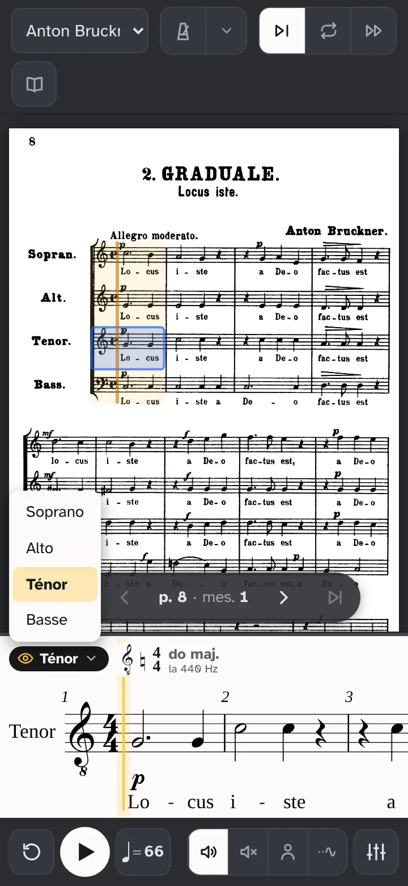
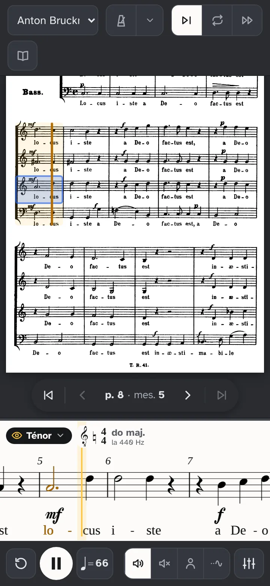
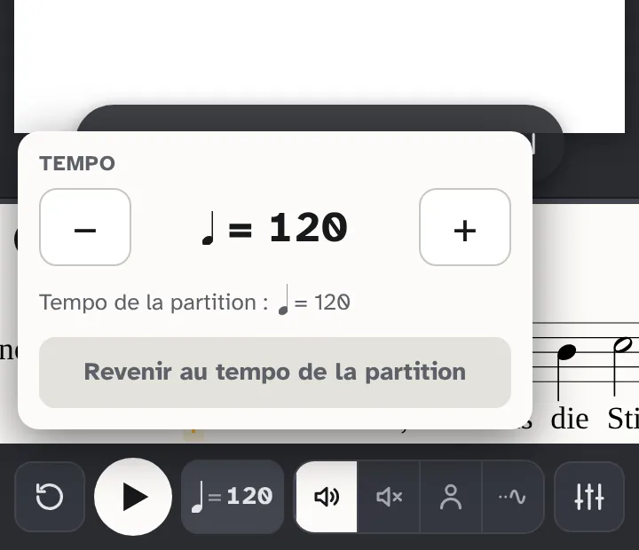
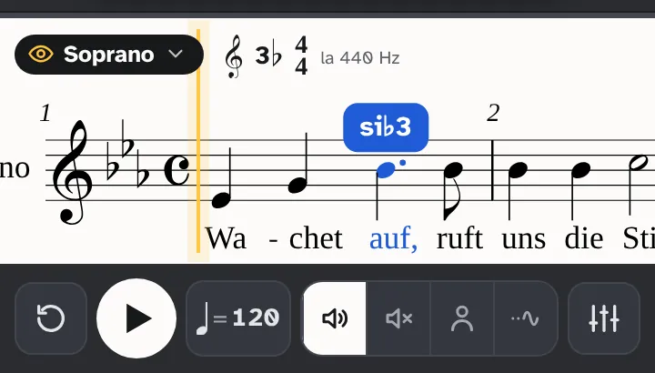
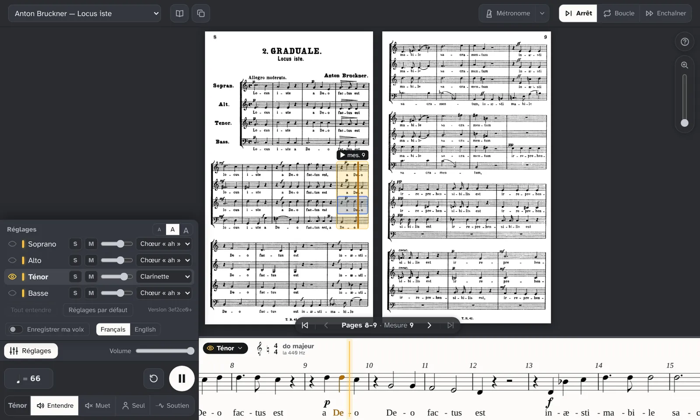
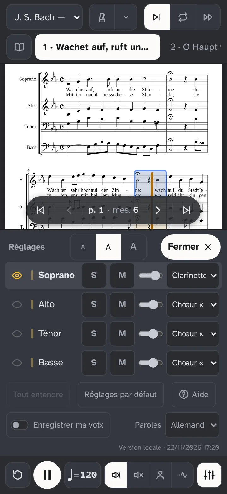
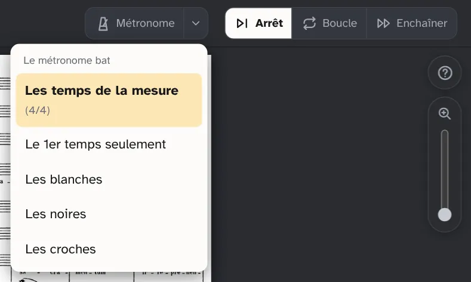
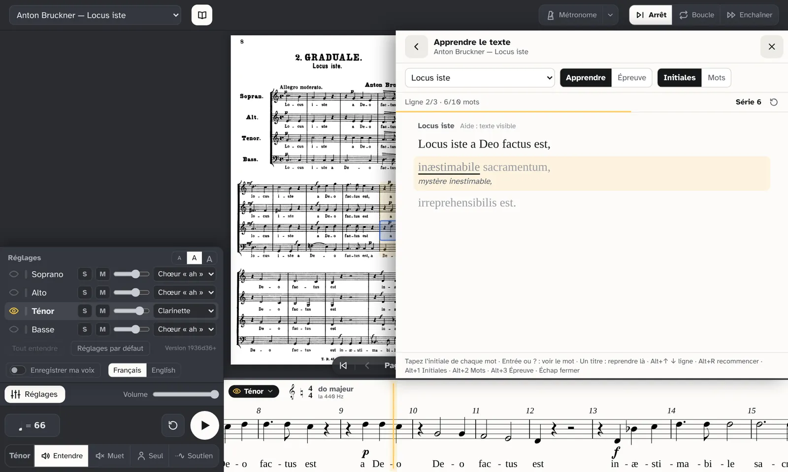
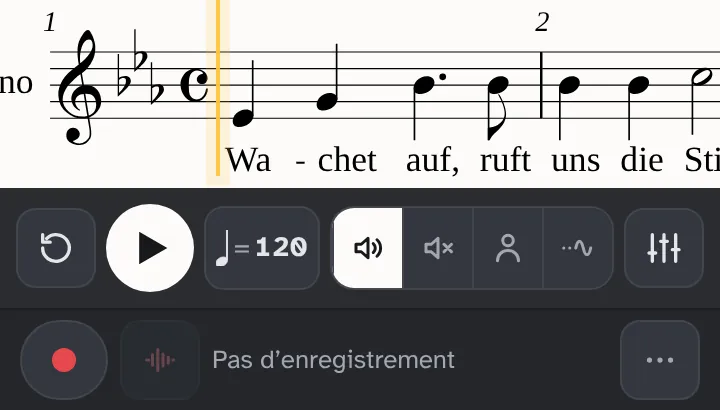

L’essentiel, en 6 étapes
Ces six étapes montrent l’essentiel de Pupitre Ouvert. Les autres fonctions sont décrites plus bas, par thème.
-
La première fois, choisissez votre voix
Pupitre Ouvert s’ouvre sur une œuvre d’exemple, le Locus iste de Bruckner. En haut de la ligne du bas, touchez le nom de la voix suivie, Ténor au départ, et choisissez la vôtre. C’est elle que Pupitre Ouvert suivra et mettra en avant, dans toutes vos partitions.
Pour travailler votre partition, ajoutez-la : voir Vos partitions.

-
Écoutez tout, en suivant votre ligne
Touchez , ou directement une mesure de la page : la musique part de là.
En haut, la partition complète : ce sont les pages de votre partition papier, numérisées telles quelles, avec ses éventuelles annotations à la main. Ses numéros de page sont ceux du papier : la page 12 dont parle le chef est la page 12 de Pupitre Ouvert. Elle suit la lecture ; la mesure jouée s’allume, votre portée y est en bleu.
En bas, la ligne de ma voix montre votre partie seule, en grand, avec le texte. Elle défile sous un trait fixe et la note chantée s’allume en orange. Cette ligne, et la musique que l’on entend, viennent d’une transcription numérique de la partition (au format MusicXML) : une erreur de note a pu s’y glisser. En cas de doute, la partition papier fait foi (voir Corriger une partition).
Votre voix sonne en clarinette, devant les autres voix en chœur « ah » et le piano : elle ressort sans couvrir l’harmonie.

-
Votre voix seule : « Seul »
Dans la barre du bas, Ma voix a quatre modes. Touchez Seul : vous n’entendez plus que votre partie.
Trop rapide ? Touchez le tempo ♩ = 120 puis − pour ralentir. fait réentendre la mesure précédente avec votre voix seule, puis la musique reprend.

-
Tout sauf votre voix : « Muet »
Touchez Muet : tout le chœur joue, sauf votre voix. La ligne du bas continue de défiler.
Entre les deux, Soutien ne fait sonner que la seconde moitié de chaque note de votre voix : la note arrive après son début. Entendre fait tout réentendre.
Sur téléphone, ces quatre boutons n’ont que leur icône : ils sont en bas, entre le tempo et .
Entendretout, votre voix devantSeulvotre voix seulementSoutienchaque note, à sa seconde moitiéMuettout sauf votre voix -
Entendre une note
Un doute sur une note ? Appuyez longuement dessus dans la ligne du bas : la musique se met en pause, la note sonne tant que vous appuyez et son nom s’affiche (ici si♭3). Au lâcher, la lecture reprend là où elle était.
Un appui bref fait seulement entendre la note.

-
Installez Pupitre Ouvert sur votre téléphone
Ajouté à l’écran d’accueil, Pupitre Ouvert s’ouvre comme une application : en plein écran, d’un geste, et sans réseau. Rien n’est téléchargé d’un magasin d’applications : c’est le navigateur qui le fait.
Android (Chrome)
- Ouvrez Pupitre Ouvert dans Chrome.
- Touchez le menu ⋮ en haut à droite.
- Choisissez « Ajouter à l’écran d’accueil » (ou « Installer l’application »).
iPhone (Safari)
- Ouvrez Pupitre Ouvert dans Safari.
- Touchez le bouton Partager (le carré avec une flèche vers le haut).
- Choisissez « Sur l’écran d’accueil ».
Vos partitions
Pupitre Ouvert est livré avec deux exemples. Les autres partitions, c’est vous qui les apportez : une archive .zip par œuvre.
Ajouter une partition
- Touchez la liste des œuvres, en haut à gauche.
- Choisissez Ajouter une partition (.zip)… et désignez le fichier.
- L’œuvre s’ouvre, et reste dans la liste : inutile de la recharger la prochaine fois, même sans réseau.
Obtenir l’archive de votre partition
L’archive réunit les pages numérisées de votre partition et leur transcription. Une intelligence artificielle qui sait exécuter du code (Claude, ChatGPT…) peut la fabriquer à partir de votre PDF ou de vos photos, en suivant la méthode publiée avec Pupitre Ouvert.
- Où est-elle gardée ? Dans le navigateur de cet appareil, et nulle part ailleurs. Sur un autre appareil, ou dans un autre navigateur, ajoutez-la de nouveau. Gardez votre fichier .zip : effacer les données du site, ou désinstaller l’app, retire aussi vos partitions.
- Une version corrigée : ajoutez la nouvelle archive, elle remplace l’ancienne.
- Gérer vos partitions : dans la liste des œuvres, Gérer mes partitions… montre ce que cet appareil garde. On y ouvre une œuvre, on en ajoute une, on retire celle qu’on a ajoutée : ses enregistrements et la progression de son texte sont effacés avec elle. enregistre l’archive d’une œuvre ajoutée, pour la garder ou la faire corriger.
- Les exemples font partie de l’app : ils se masquent au même endroit, sur cet appareil, et s’y remettent quand vous voulez.
- L’archive est refusée ? Pupitre Ouvert dit ce qu’il y manque : transmettez le message à celui, ou à l’IA, qui l’a faite.
Corriger une partition
La musique vient de la transcription contenue dans l’archive : une erreur a pu s’y glisser, et la partition papier fait foi. Une archive se corrige, puis remplace l’ancienne.
Par votre IA
- Allez à la mesure fautive et touchez à droite du bouton de la fiche : l’œuvre, la mesure, la page et les notes de la mesure sont copiées.
- Collez ce texte à votre IA, dites ce qui ne va pas, et joignez l’archive .zip de l’œuvre.
- Ajoutez l’archive corrigée qu’elle vous rend : elle remplace l’ancienne.
Vous-même, si vous lisez la musique
L’archive contient la partition au format MusicXML : dans le fichier .zip, dossier source, fichier mvt1.musicxml (un fichier par mouvement). Un éditeur de partitions l’ouvre, par exemple MuseScore Studio, gratuit.
Corrigez, exportez en MusicXML, et donnez ce fichier à votre IA avec l’archive : elle la refait à partir de votre correction.
- Vous n’avez plus le fichier .zip ? Dans la liste des œuvres, choisissez Gérer mes partitions… puis touchez en face de l’œuvre : l’app vous rend son archive.
- Votre IA ne connaît pas Pupitre Ouvert ? Le texte copié lui dit où lire la méthode. La page Créer l’archive de ma partition la contient aussi.
- Une archive ancienne, faite avant que les archives n’emportent ce dont elles sont faites, ne se corrige pas ainsi : il faut la refaire à partir de la partition.
L’écran en un coup d’œil
Tout est sur un seul écran, sans menu. Chaque lettre renvoie à la légende.
- A
- Œuvre : la partition ouverte ; en choisir une autre.
- B
- Métronome et fin du mouvement : arrêter, boucler ou enchaîner.
- C
- Fiche de l’œuvre : le texte, sa traduction, « Apprendre le texte ». À sa droite, copie où vous en êtes, pour signaler une erreur.
- D
- Mouvements : touchez-en un pour l’ouvrir.
- E
- La page : touchez une mesure pour jouer depuis là ; balayez pour tourner la page, pincez pour zoomer.
- F
- Navigateur : page et mesure ; touchez le centre pour aller à une mesure.
- G
- Voix suivie : touchez pour suivre une autre voix. À côté : la clé, l’armure, la mesure, le ton, et le diapason des sons (la 440 Hz).
- H
- Ligne de ma voix : votre partie seule, avec le texte ; touchez une note pour l’entendre.
- I
- réécouter, lecture et pause, ♩ = 120 le tempo.
- J
- Ma voix : Entendre, Muet, Seul, Soutien.
- K
- Réglages : chaque voix et le piano (suivre, solo, muet, volume, instrument), l’affichage, la langue, et l’aide.

Téléphone tourné sur le côté : la barre du bas propose Ligne, Page ou Les deux, pour afficher la ligne de ma voix seule, la page seule, ou les deux côte à côte.
Toutes les fonctions
Par thème, pour retrouver vite ce que l’on cherche.
Ma voix : les quatre modes
| Mode | Ce que vous entendez |
|---|---|
| Entendre | Tout le chœur, votre voix devant. |
| Muet | Tout, sauf votre voix. |
| Seul | Votre voix seulement. |
| Soutien | Chaque note de votre voix, à sa seconde moitié seulement. |
Sur téléphone, seules les icônes sont affichées.
Réglages avancés : chaque voix, les sons, l’affichage
Sur téléphone, le bouton (en bas à droite) les ouvre. Sur ordinateur, ils sont dépliés en bas à gauche, au-dessus des commandes ; Réglages les replie. Une ligne par voix, et une pour le piano :
- choisit la voix suivie, celle de la ligne du bas. Le piano peut l’être aussi.
- S (solo) : n’entendre que cette voix. Plusieurs solos sont possibles : votre voix + le piano, votre voix + l’alto…
- M (muet) : couper cette voix.
- Le curseur règle le volume ; un témoin s’allume quand la voix chante. Sur ordinateur, Volume, à côté de Réglages, règle le tout.
- L’instrument de chaque voix (voir ci-dessous).
- Tout entendre enlève les solos et les muets ; Réglages par défaut remet aussi les instruments, les volumes, le tempo et l’affichage.
- A A A : la taille de la ligne du bas. Paroles : quel texte afficher, quand l’œuvre en a plusieurs.
- Français / English : la langue de l’app.
- Sur téléphone, c’est aussi là qu’est l’Aide.

Les instruments
- Clarinette
- Nette et ronde, elle ressort du chœur : la voix suivie, par défaut.
- Chœur « ah »
- Des voix sur « ah » : les autres voix, par défaut.
- Nom des notes
- Une voix chante le nom de chaque note (do, ré, mi…) à sa hauteur.
- Marimba
- Chaque note frappée puis qui s’éteint : on entend exactement où elle commence.
- Cordes
- Un son tenu et doux.
- Piano
- L’accompagnement, par défaut ; possible aussi pour une voix.
Les réglages sont gardés par voix et par appareil. Suivre une autre voix la passe en clarinette et remet les autres en « ah ».
Ralentir ou accélérer
- Le tempo de la barre du bas ♩ = 120 est celui de l’endroit joué. Il se colore quand il n’est plus celui de la partition.
- Le toucher : − et + par crans de métronome, de 40 % à 200 % du tempo écrit.
- « Revenir au tempo de la partition » annule le changement. Si la partition change de tempo, l’écart choisi est gardé.
- Réécouter : rejoue depuis le début de la mesure précédente avec votre voix seule, puis la musique continue normalement.
Métronome et fin du mouvement
- Métronome (en haut) : le bouton l’allume ou le coupe. La flèche choisit ce qu’il bat : les temps de la mesure, le 1er temps seulement, les blanches, les noires ou les croches.
- À la fin du mouvement : Arrêt, Boucle (le rejouer depuis le début) ou Enchaîner (passer au suivant). Sur téléphone, ce sont les trois icônes ; une bulle confirme le choix.

Le texte : la fiche et « Apprendre le texte »
Le bouton , à gauche des mouvements, ouvre la fiche de l’œuvre : pour chaque mouvement, le tempo, le ton, le texte chanté et sa traduction. La musique continue pendant ce temps. « Jouer ce mouvement » l’ouvre et le joue.

Apprendre le texte (en haut de la fiche) fait retrouver le texte de mémoire, au clavier, dans l’ordre :
- Initiales : tapez la première lettre de chaque mot. Mots : tapez le mot entier.
- Apprendre : une aide par mouvement, de « texte visible » à « aucune ». Elle diminue quand vous réussissez et revient quand vous trébuchez.
- Épreuve : tout est caché ; un score (précision, erreurs, temps) et les mots à revoir.
- Accents, majuscules et ponctuation ne comptent pas. Entrée ou « ? » montre le mot qui vous échappe.
- Toucher le titre d’un mouvement y reprend ; recommence depuis le début.
Enregistrer ma voix
Fonction expérimentale. Selon le téléphone, le micro et le casque, le son enregistré peut être de qualité médiocre, ou légèrement décalé par rapport à la musique.
Pour vous entendre chanter avec la musique. À activer dans les Réglages : « Enregistrer ma voix ». Tant que c’est éteint, le micro n’est jamais demandé.
- lance la musique et enregistre. Tout ce qui arrête ou déplace la musique arrête l’enregistrement et le garde.
- Une prise par mouvement : la nouvelle remplace l’ancienne. Elle reste sur l’appareil.
- « Ma voix enregistrée » se réécoute avec la musique, comme une voix de plus, dans tous les modes.
- Au même tempo seulement : à un autre tempo elle se tait (la toucher remet le tempo de l’enregistrement).
- Le menu : volume, choix du micro, décalage (si votre voix est en retard sur la musique), exporter ou importer un fichier .wav, supprimer.

Casque, écran verrouillé, notification
- Le bouton lecture / pause du casque (filaire ou Bluetooth) arrête et relance Pupitre Ouvert, comme une application de musique.
- « Suivant » et « précédent » (souvent un double ou un triple appui) : mouvement suivant, début du mouvement.
- La notification et l’écran verrouillé montrent le mouvement et une barre de progression ; la faire glisser déplace la musique.
- L’écran reste allumé pendant la répétition.
- Sur iPhone, Pupitre Ouvert sonne même quand l’interrupteur est sur « silencieux ».
Sur ordinateur : le clavier
| Espace | Lecture / pause |
|---|---|
| ← → | Mesure précédente / suivante |
| Page préc. Page suiv. | Tourner les pages |
| Origine | Début du mouvement |
| R | Réécouter |
| Échap | Fermer la fiche ou une fenêtre |
Dans « Apprendre le texte » : Alt+1 Initiales, Alt+2 Mots, Alt+3 Apprendre ou Épreuve, Alt+↑ ↓ ligne précédente ou suivante, Alt+R recommencer.
Hors ligne et mises à jour
- Sans réseau : une fois ouvert, Pupitre Ouvert marche hors ligne. Un instrument est gardé après sa première écoute : essayez-les une fois avec du réseau.
- Mises à jour : elles arrivent seules, au lancement suivant. La version installée est écrite en bas des Réglages.
- Pour l’installer sur l’écran d’accueil : étape 6 de « L’essentiel ».
Questions fréquentes
Je n’entends rien.
Vérifiez le volume du téléphone, puis dans les Réglages qu’aucune voix n’est en muet ou en solo par erreur : Tout entendre remet tout le monde. Au tout premier lancement, les sons se chargent quelques secondes.
Avec mon casque Bluetooth, le son est en retard.
Le Bluetooth ajoute toujours un retard. L’affichage tient compte de celui que le téléphone annonce : la note allumée suit ce que vous entendez. Pour chanter en même temps que la musique, un casque filaire ou le haut-parleur du téléphone donnent le moins de retard. Pour un enregistrement, le réglage « Décalage » du menu recale votre voix.
Comment suivre une autre voix, ou le piano ?
Touchez le nom de la voix suivie en haut de la ligne du bas, ou l’ d’une autre voix, dans les Réglages.
J’ai changé trop de réglages.
En bas des Réglages, Réglages par défaut (confirmez d’un second appui) remet tout comme au premier jour, sauf la voix suivie.
Ai-je la dernière version ?
La version est écrite en bas des Réglages, avec sa date. Pupitre Ouvert se met à jour seul : fermez-le et rouvrez-le pour prendre la plus récente.
Comment travailler ma propre partition ?
En l’ajoutant sous la forme d’une archive .zip : voir Vos partitions. Les images de cette aide montrent les œuvres d’exemple, dans des éditions anciennes, libres de droits.
Une note jouée ne correspond pas à ma partition.
La musique vient de la transcription contenue dans l’archive, et une erreur a pu s’y glisser : la partition papier fait foi. copie l’endroit où vous êtes, à donner avec l’archive à qui la corrigera : voir Corriger une partition.
J’ai trouvé un bug.
Merci de le signaler (Nous écrire) ; une capture d’écran et le numéro de version, en bas des Réglages, aident beaucoup.
Droits d’auteur
Une œuvre ancienne est libre, mais son édition (la gravure des pages, la réduction pour piano, une traduction) est souvent protégée. Pupitre Ouvert est fait pour que cela reste simple :
- Vos partitions restent sur votre appareil : l’archive que vous ajoutez n’est envoyée à personne, ni à ce site, ni ailleurs.
- Une archive contient les images de votre partition : elle est faite pour votre usage personnel, répéter votre partie. Ne la diffusez pas si l’édition est protégée.
- Les œuvres d’exemple et les images de cette aide sont libres de droits : le Locus iste de Bruckner (première édition, 1886) et le Kyrie de la Messe en sol de Schubert (édition Novello), d’après leurs numérisations.
Vos données
- Pas de compte, pas de publicité, pas de mesure d’audience. Pupitre Ouvert ne collecte rien sur vous.
- Ce qui se télécharge : uniquement depuis le site de Pupitre Ouvert (hébergé par GitHub Pages) : l’application, l’œuvre d’exemple, les sons des instruments. Aucun autre site n’est contacté. Comme pour tout site, l’hébergeur voit ces téléchargements (votre adresse IP).
- Ce qui reste sur l’appareil : vos réglages, les partitions que vous avez ajoutées, votre progression dans « Apprendre le texte » et vos enregistrements. Rien de cela n’est envoyé. Effacer les données du site dans le navigateur, ou retirer l’application, les supprime.
- Le micro ne sert qu’à « Enregistrer ma voix », si vous l’activez, et seulement pendant un enregistrement.
- Rien n’est installé d’ailleurs : l’installation sur l’écran d’accueil est une fonction du navigateur, et les mises à jour viennent du même site.
Auteur et licences
Pupitre Ouvert a été créé par Alexis Michenaud-Rague. Il a été développé avec Claude, l’intelligence artificielle d’Anthropic, et ses agents : ils ont écrit le code de l’app et les scripts qui transcrivent les partitions, mené les vérifications et les tests, et suivi le développement. L’app elle-même ne fait appel à aucune intelligence artificielle : tout se passe sur votre appareil.
Pupitre Ouvert est gratuit et sans but commercial. C’est la version ouverte de Pupitre, l’app d’un chœur : la même app, où chacun apporte ses partitions. Son code et ses outils sont publics, sous licence MIT : github.com/Bolevo/pupitre-ouvert.
Comment c’est fait
Chaque œuvre réunit deux choses : les pages numérisées de la partition papier, affichées telles quelles, et leur transcription au format MusicXML (les notes, les rythmes et le texte de chaque voix). Pupitre Ouvert joue la transcription, en dessine la ligne de votre voix et la relie, mesure par mesure, aux pages. Le tout forme un fichier par œuvre : l’archive .zip (comment la créer).
Pour le reste, Pupitre Ouvert s’appuie sur des bibliothèques de code libres et sur des sons et des polices sous licence libre. Ce sont des fichiers livrés avec l’app et utilisés sur votre appareil, pas des services en ligne :
| Bibliothèque ou fichier | Sert à | Licence |
|---|---|---|
| Verovio | Dessiner la ligne de ma voix | LGPL 3.0 ou ultérieure |
| Preact, Preact Signals | L’interface | MIT |
| fflate | Ouvrir les fichiers .zip | MIT |
| idb-keyval | Garder les données sur l’appareil | Apache 2.0 |
| Workbox (vite-plugin-pwa) | Le fonctionnement hors ligne | MIT |
| Atkinson Hyperlegible, Tinos | Les polices de caractères | SIL OFL 1.1 |
| Salamander Grand Piano V3 (Alexander Holm) | Le piano | CC BY 3.0 |
| MuseScore General (S. Christian Collins, d’après FluidR3 de Frank Wen) | Le chœur « ah », les cordes | MIT |
| Voix MBROLA fr1 (Faculté polytechnique de Mons) et fr4 (Babel Technologies) | Le nom des notes (sons produits avec MBROLA et le vocodeur WORLD) | Usage non commercial |
| IMSLP (numérisations n° 437277 et 974289) | Les partitions des œuvres d’exemple | Domaine public |
Le site est hébergé par GitHub Pages (GitHub, Inc.).
Nous écrire
Un bug, une idée de fonction, une question : écrivez à
Pour un bug : ce qui s’est passé, une capture d’écran, et la version de Pupitre Ouvert (en bas des Réglages). Le code est public : un défaut peut aussi être signalé, ou corrigé, sur GitHub.